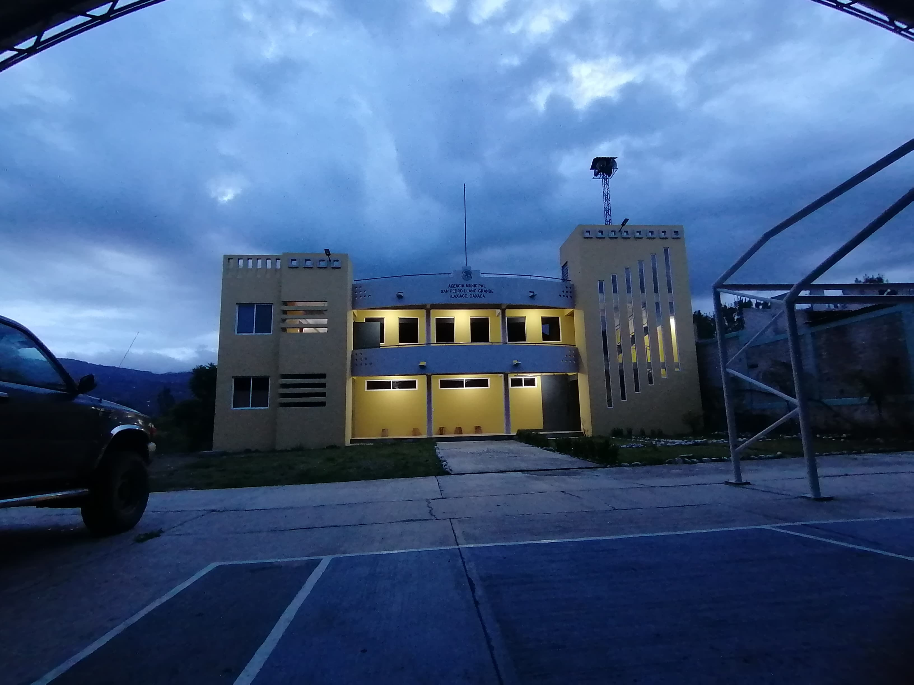

|
Historia
Fotos
Ubicacion
Contacto
|
 |
San Pedro Llano Grande:
En estado de Oaxaca se encuentra la región mixteca de la sierra norte donde se ubica una maravillosa comunidad denominada San Pedro Llano Grande Cuquila Tlaxiaco Oaxaca.
Y podremos encontrar diferentes costumbres y tradiciones además de la riqueza cultural que puede ser lo que nos hace identificarnos y diferenciarnos de las demás regiones, como es la lengua materna que nuestros antepasados nos han venido heredando que es el mixteco.
Servicios :
Se cuenta con diferentes servicios: como el hospedaje que se da en la casa de don Ceferino Pedro Santiago cruz se encuentra cerca de la carretera y de la clínica.
Transporte se puede tomar un taxi en la casa de don Librado León está disponible a las 24 horas del día se encuentra en la orilla de la carretera a 20 m de la agencia municipal una casa de dos pisos pintada de color melón
Comedor bueno pues este se localiza en el centro de la comunidad a lado de la escuela primaria en la casa avenida san Pedro # 1, se ofrece comidas recién preparadas y típicas del pueblo, tortillas hechas al comal de barro también tamales con carne de pollo de res o de hongos de la comunidad.
Clínica se encuentra a 18 metros hacia al oeste dirigiéndose hacia a la comunidad de plan de Guadalupe cerca de la casa de don Ceferino Pedro Santiago cruz ofrece medicina de calidad con horario de 8:00 am hasta 4:00 pm los días lunes a viernes y estará atendiendo la doctora Arcelia junto con las autoridades de la comunidad apoyando y cuidanto la flora y la fauna que existe en el pueblo ya que es muy importante para todos nosotros
|